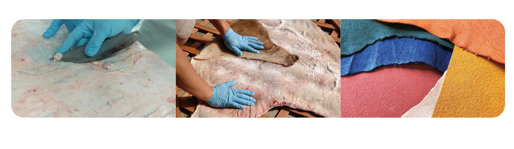
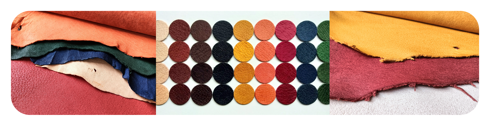

革について

島シシレザーとは、国産イノシシ革です。
愛媛県今治市、大三島・伯方島で捕獲されたイノシシを資源として活用すべく
活動している“しまなみイノシシ活用隊”が、精肉加工で出た“排出皮”を捨てずに
一手間かけて地域の新しい資源として2014年から有効活用を始めました。
柑橘栽培に甚大な被害を与えているイノシシの食害。
この厄介モノを資源として活用する事で、島の新しい産業へと
また農業従事者へのエールになればと思い、カタチにしました。
＝ なめし加工
革にする作業“なめし加工”は、東京の加工業者（山口産業株式会社様）に委託しています。
弊社に委託する前段階の下処理（解体→皮に残った肉脂の処理→塩漬け／塩蔵）は
活用隊で行なっています。
島シシレザーは、人と自然環境にやさしい植物タンニンなめしの革です。
＝ 特徴
天然皮革の特徴と植物タンニン鞣しの持ち味が引き出された
丈夫で軽くソフトな風合いが特徴です。
イノシシ革は、野山を駆け回ったキズやシミがあるだけではなく、
オス／メス、季節、年齢、部位（たてがみ、お尻、お腹）によっても毛穴が目立つ、
ハリがある、伸びがあるなど風合いが異なります。
＝ お手入れ
イノシシ革は特別な手入れをしなくても、柔らかさが保たれ、摩擦や人の皮脂が
天然の保湿クリームになり、ツヤが変化し始め使い込むほどに味わいが出てきます。
革繊維がとても密になっている為、他の革素材と比べても傷つきにくく、
型崩れにも強いと言われています。

＝ 問い合わせ
島シシレザーに関する質問、素材販売に関する問い合わせはこちらに
代表：しまなみイノシシ活用隊 皮革担当／重信 幹広
Tel：090-1856-0965
Mail：info@jishac.site